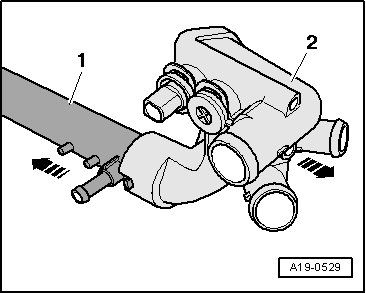

Thermostat: Service and Repair
Coolant Thermostat Housing
Special tools and workshop equipment required
- Hose Clip Pliers -V.A.G 1921-
- Drip Tray for VAS 6100 -VAS 6208-
Removing
- Remove the intake manifold. Service and Repair
- Remove the windshield wiper arms Service and Repair
- Remove the plenum chamber cover. Service and Repair
- Remove the center plenum chamber bulkhead. Service and Repair
- Drain the coolant. Service and Repair
- Disconnect and free up all of the connections and coolant hoses from the thermostat housing.
- Remove the thermostat housing bolts -item 4-
Caution
Press the coolant pipe in the direction of the coolant pump using a pry bar when removing the coolant thermostat housing so that is not pulled off.

- Remove the coolant thermostat housing -2- while pressing the coolant pipe -1- toward the coolant pump with a pry bar.
Installing
Installation is carried out in the reverse order while noting the following:
- Tightening torque: 8 Nm
- Replace seals.
- Fill the coolant. Service and Repair